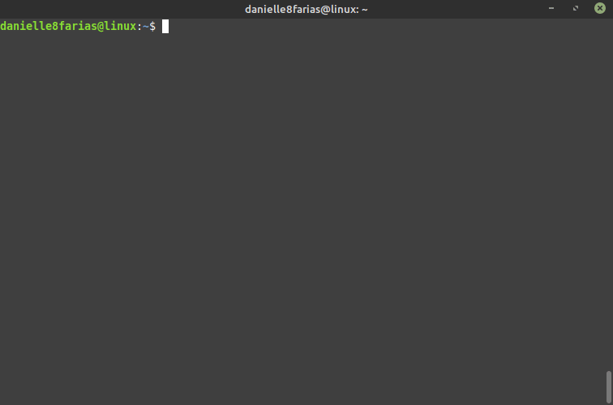

Essa instrução serve para as distros Linux baseadas no Debian (Ubuntu, Mint e derivados).
Baixando a lista de repositórios
Para atualizar os pacotes do seu sistema, digite no terminal:
$ sudo apt update
- $ indica que você deve usar o usuário comum para fazer essa operação.
- sudo serve para pedir permissões de administrador temporariamente.
- apt do inglês, Advanced Package Tool, em português, Ferramenta de Empacotamento Avançada; é a ferramenta que nos ajuda na instalação, atualização e desinstalação de programas, entre outras funções.
- update serve para atualizar a lista dos repositórios.
- Os repositórios são servidores que hospedam os pacotes de software de cada distribuição Linux.
Serão mostradas na tela as atualizações existentes.
Exemplo:
Instalando as atualizações
Para fazer a instalação dessas atualizações,
$ sudo apt upgrade
- upgrade é o comando que irá fazer a instalação das atualizações em si.